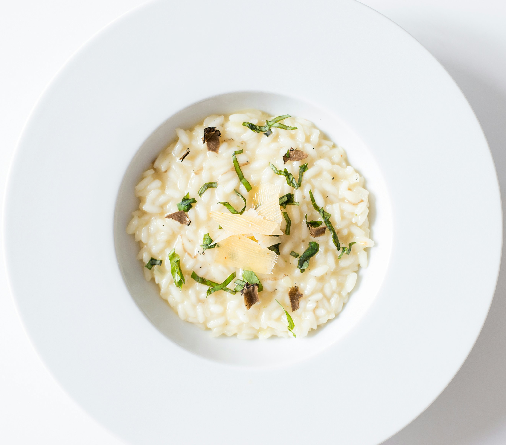

Mushroom Risotto

Photo by Julien Pianetti on Unsplash
Description
Risotto is one of the classic dishes of the Italian cuisine. While it only requires simple ingredients, it is truly delicious and filling.
What you'll need:
- Chicken broth - 6 cups
- Olive oil - 3 tbsp
- Portobello mushrooms - 1 lbs, thinly sliced
- White mushrooms - 1 lbs, thinly sliced
- Shallots - 2 medium-sized, diced
- Arborio rice - 1,5 cups
- Dry White Wine - 1/2 cup
- Parmesan cheese - 1/3 cup
- Chives - 3 tbsp, finely chopped
- Butter - 4 tbsp
- Salt and pepper - to taste
How to make it:
Recipe from: allrecipes.com